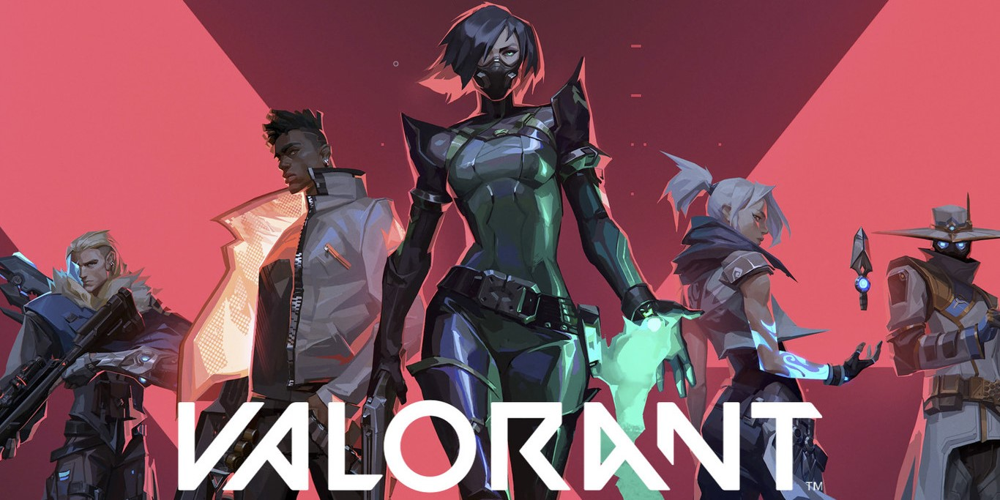
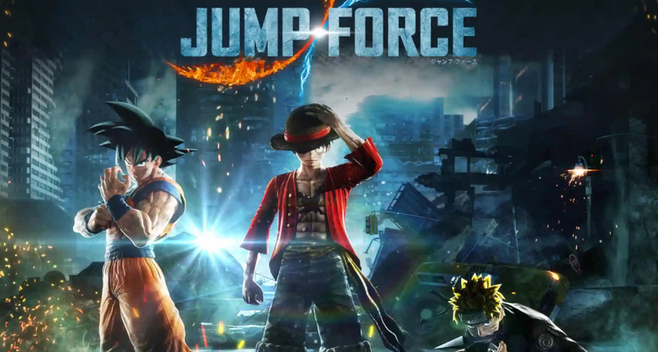
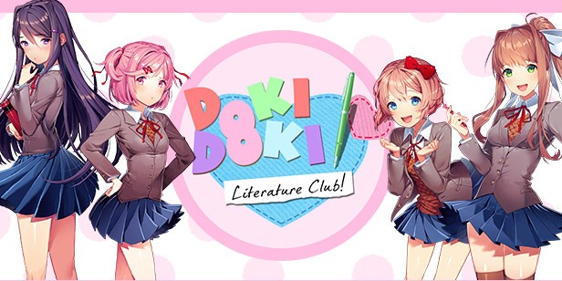
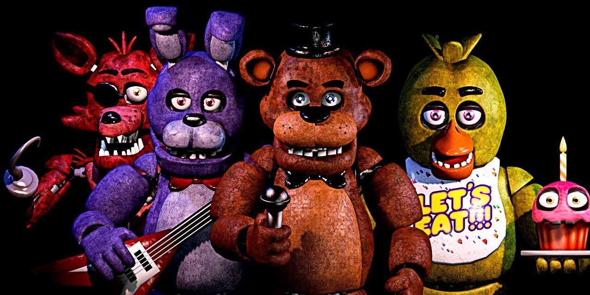

The Legend of Zelda: Breath of the Wild
Descripció: Se nos presenta a un Link que lleva sumido en un profundo sueño desde hace 100 años y que despierta en un misterioso templo sin saber cómo ni por qué ha acabado ahí. Link deberá hacer caso a una misteriosa voz que le encomienda la misión de acabar con el villano Ganon, un ser maligno que aparece desde épocas inmemoriales y que causó lo que se conoce como el cataclismo.
Fecha lanzamiento: 2017
Ver más

Valorant
Descripció: Valorant es un videojuego de acción en primera persona, siendo el juego más ambicioso de Riot Games desde League of Legends. Se trata de un shooter táctico que fusiona lo mejor de la acción sin contemplaciones de títulos como CS:GO con el componente estratégico de Overwatch en partidas de gran intensidad con mucho énfasis en el competitivo.
Fecha lanzamiento: 2020
Ver más

Pokémon Let's Go
Descripció: Si bien incluye muchos elementos tradicionales, se trata de un nuevo concepto de videojuego en Pokémon, que bebe de ciertas mecánicas extraídas de Pokémon GO. En Pokémon Let’s Go Eevee! y Pokémon Let’s Go Pikachu! viajaremos por Kanto con la compañía de Pikachu o Eevee según la edición, siendo ellos nuestros Pokémon compañeros principales.
Fecha lanzamiento: 2018
Ver más

Jump Force
Descripció: JUMP Force es un juego de combate y acción en 3D para Xbox One, PS4 y PC que tiene su principal atractivo en ofrecer un crossover de personajes y universos anime y manga basados en la prestigiosa publicación japonesa Shonen Jump.
Fecha lanzamiento: 2019
Ver más

Doki Doki Literature Club
Descripció: Doki Doki Literature Club! es un videojuego de aventura y novela visual para un jugador en el que, trasladándonos a Japón, viviremos los días de instituto junto a un grupo de chicas aficionadas a la literatura. Allí, y en el club de literatura para amantes de los libros, encontraremos el amor y también un sorprendente giro... que convierte a este sorprendente juego en una aventura de terror.
Fecha lanzamiento: 2021
Ver más

Five Nigths at Freddy's
Descripció: Five Nights at Freddy's es un juego de simulación y terror. En este juego seremos contratados durante cinco días en el restaurante Freddy Fazbear's Pizza, un restaurante familiar dónde los animatrónicos Freddy y sus compañeros entretienen al público. Pero por la noche los robots han comenzado a comportarse de forma extraña y deberemos vigilarlos por los monitores a la vez que nos protegemos.
Fecha lanzamiento: 2014
Ver más